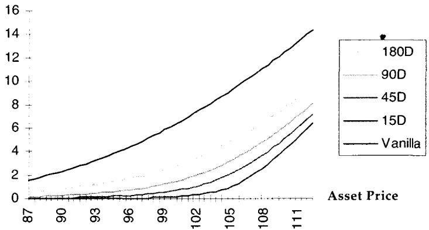
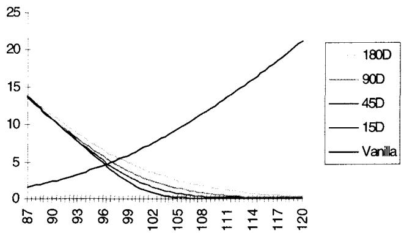
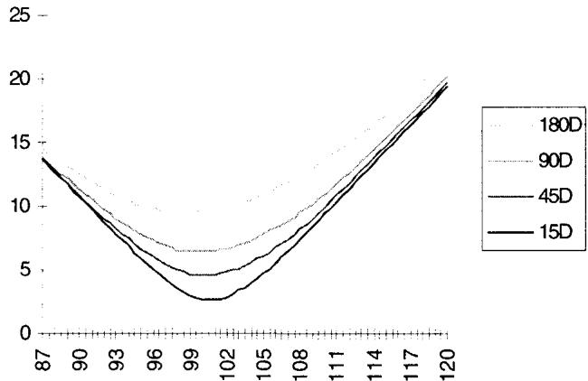
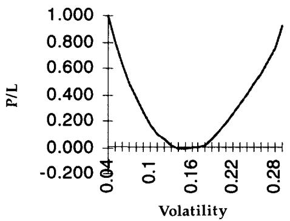
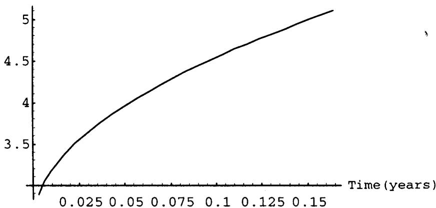
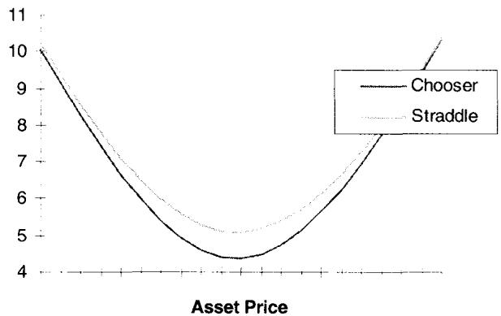
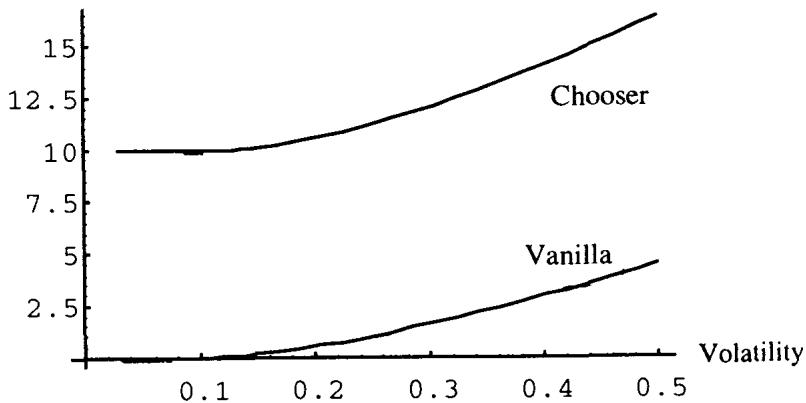
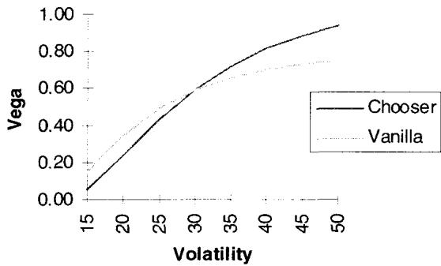

第21章：复合期权、选择者期权与高阶期权（Compound, Choosers, and Higher Order Options）
Hiring an option trader with P/L volatility is the most common manifestation of a compound option. —— Taleb
导读：本章要解决的问题
Taleb 开篇那句玩笑话其实点明了全章的题眼。一个期权交易员的损益本身是波动的，雇用他相当于买入"一个写在波动率上的期权的期权"，损益越不稳定，这个嵌套期权的价值越高。复合期权（compound option）的全部难处，就藏在这层嵌套里：它的价值不只看标的怎么动，更看波动率本身怎么动。
对一个已经能写出 BSM、推导各阶希腊字母、做风险中性定价的读者，本章要补的不在定义层面，而集中在三件事上：
- 复合期权是"期权的期权"，它把定价的敏感度从二阶矩（方差）推到了四阶矩（峰度），交易员把后者叫做"波动率的波动率"（volatility of volatility，下称 vvol）。常数波动率模型对它系统性地失真。
- vega 不再是一个可以一次性中性化的线性敞口。复合期权的 vega 对波动率高度凸，把它和香草期权配成 vega 中性，剩下的是一个写在波动率上的跨式。这把第八章的 gamma/theta 故事原样搬到了波动率空间。
- 选择者期权（chooser）和高阶期权（caption、floortion）是同一套逻辑的变体：chooser 是"在中途二选一"的 max 结构，本质是写在 put 和 call 上的彩虹期权；caption/floortion 同时具备篮子期权和复合期权两重身份。
笔记沿原文小节顺序展开：先给复合期权与高阶期权的定义和图示，再用一个 case study 把 vega 凸性讲透，接着说它对冲障碍期权 vega 的用途，然后是 chooser，最后落到利率市场的 caption/floortion。每处都把 Taleb 的交易直觉对应回我们熟悉的定价命题。
一、复合期权与高阶期权的定义
复合期权是"交付另一个期权的期权"（options that deliver another option）。最典型的载体是可展期期权（extendible option）一类结构：结构的持有人在存续过程中的某个时点，可以付一笔费用把自己的选择权延续下去。这类"中途再决定一次"的权利，正是复合性的来源。
Taleb 一上来就给出本章的核心警告。复合期权对标的的高阶导数极其敏感，尤其是分布的第四矩（也就是 vvol），同时也敏感于价值对波动率的二阶导数（与前者相关）。正因如此，它们经常被错误定价：相比香草期权，复合期权更依赖分布尾部的厚度。一个早年写就的常数波动率模型用在这里是危险的。Taleb 坦言，在他写作的当时，除了他自己尝试过的几种数值方法，并没有公开、正确（即用随机波动率）给复合期权定价的公式；所以全章的处理办法是先用现有的、并不完美的公式，再围绕它估一个合适的加价（markup）来兜住模型误差。
把概念形式化。复合期权又叫二阶期权（second-order option），是写在一个欧式期权上的期权：持有人有权按预定价格买入或卖出一个给定行权价、给定到期的欧式期权（称为标的期权，underlying option）。三阶期权是写在复合期权上的期权，以此类推。
一个复合期权有一个最终行权价 和一个最终到期日 （对应香草期权的那一对），此外还有中间行权价和中间日期。二阶期权可以写成
其中 、 是底层香草的行权价与到期； 是在 时刻按之买卖那张香草期权的中间行权价，且必须有 。每一个行权价还要用指示符 进一步说明它是 put 还是 call（即买入权还是卖出权）。
更一般地， 阶期权的完整设定是
约束为
每一层都加一个"在更早的时点、用一个中间行权价、决定是否继续持有下一层期权"的权利。层数越多，决策节点越多，对 vvol 的依赖越深。
理论映射：从 Geske 公式到 vvol
在常数波动率的 BSM 世界里，call-on-call 是有解析解的，即 Geske（1979）的复合期权公式，形式上是一个用二元正态分布 表达的式子，相关系数 来自两个时间窗的重叠。问题不在于有没有公式，而在于这个公式假设了一条恒定且确定的波动率路径。复合期权的支付依赖"到 时那张底层期权值多少钱"，而底层期权的价钱本身就是波动率的函数。于是复合期权的价值是"波动率的函数的函数"，它真正押注的是波动率会不会变、变多大，也就是 vvol。常数波动率模型把 vvol 设成零，等于把这张期权最核心的风险抹掉了，定价自然系统性偏低。这就是 Taleb 说它"依赖尾部厚度"的含义：vvol 越高，标的分布的峰度（kurtosis，第四矩）越大，尾部越厚，而复合期权对厚尾的敏感度远高于香草。

图 21.1 给出一个 call-on-call 的价格曲线：底层是 1 年期、行权价 1 的看涨，波动率 16%，远期曲线假设为平。横轴是标的，纵轴是这张"写在看涨上的看涨"的价值。它的形状像一张更弯的香草看涨，因为它在底层期权变值钱的方向上才有支付。

图 21.2 是一张虚值的 put-on-call，持有人有权在中间日按 把那张底层看涨"卖回"。它在底层期权贬值（标的下行、或波动率下行）时才有价值，方向与图 21.1 相反。

图 21.3 把 call-on-call 与 put-on-call 叠起来，得到一张"写在看涨上的跨式"。它在底层期权价格大幅偏离 的任一方向都有支付，是后面 vega 凸性讨论的几何雏形：复合结构天然偏好"底层期权价格本身大幅波动"，而底层期权价格的波动，主要由波动率驱动。
二、Vega 凸性：动态对冲的成本
这一节是全章的分析内核。Taleb 用一个 case study 把抽象的 vvol 落成可算的损益表（见表 21.1）。设定如下：底层期权 2 年期，行权价 100，远期曲线平，波动率 15%，并为简化假设波动率曲线整条平。这张底层期权初始价格约为 8%（指占名义的百分比）。交易员买入一张"虚值 16% 的 call-on-call"，并在标的证券上做 vega 中性 对冲。为简化，假设 vega 中性不需要加权调整因子，那些权重对说明问题没有帮助。
关键观察来自图 21.4：vega 中性是不稳定的。交易员对一张 long 的复合期权做 vega 中性，得到的并不是一个干净的零波动率敞口。他得到的是一个写在波动率上的跨式（a straddle on volatility）。

图 21.4 把复合期权的损益（随波动率变化）和等 vega 的香草做对照。香草那条线近似是直的：在 16% 附近被对冲成中性后，波动率往任一方向移动，香草腿的损益大致线性。复合期权那条线却是上凸的碗形：无论波动率上行还是下行，对冲组合都赚钱。这正是"波动率跨式"的形状。
把表 21.1 读成损益曲线就一目了然。组合在初始波动率 16% 处被设成中性（P/L 为 0），随后无论波动率往哪边走，"Compound P/L 减去对冲腿"的合计 P/L 都 ：
| vol | Compound 价格 | 香草腿 P/L | 复合腿 P/L | 组合 P/L |
|---|---|---|---|---|
| 0.05 | 0.000 | 2.062 | -1.065 | 0.997 |
| 0.08 | 0.061 | 1.499 | -1.004 | 0.495 |
| 0.12 | 0.420 | 0.750 | -0.645 | 0.105 |
| 0.16 | 1.065 | 0.000 | 0.000 | 0.000 |
| 0.20 | 1.878 | -0.750 | 0.813 | 0.063 |
| 0.24 | 2.893 | -1.499 | 1.828 | 0.329 |
| 0.30 | 4.611 | -2.624 | 3.546 | 0.922 |
注意组合 P/L 列：在 16% 两侧都为正，底部贴着零，向两翼翘起。这就是 long vega convexity 的数值证据。复合期权的价格作为波动率的函数是凸的，所以即使把一阶的 vega 对冲掉，二阶的 vega（即 vanna/volga 中的 volga，）还留在手里，让组合在波动率大幅移动时获益。
理论映射：把 gamma/theta 故事搬进波动率空间
这一节的结构和第八章讲 gamma 时完全同构，只是把"标的"换成"波动率"。香草期权的损益对标的是凸的（gamma>0），动态 delta 对冲后留下的是 的二次收益，代价是付 theta。复合期权的损益对波动率是凸的（volga>0），vega 中性对冲后留下的是
这个 就是 volga（也叫 vomma），它正比于对 vvol 的敞口。换句话说，long 复合期权 = long volga = long vvol。要让这个凸性有正期望价值，波动率本身必须真的会动。如果世界真是常数波动率（ 恒为零），这条凸性曲线永远停在底部的零点，复合期权就该按香草的边际定价。现实中波动率会动，而且动得有聚集性、有厚尾，所以这条凸性值钱。常数波动率模型看不见 volga 的价值，于是给复合期权报了一个偏低的价。
由此也能理解 Taleb 为什么强调"估 markup"而非追求精确公式。volga 的价值取决于 vvol 的大小和它与标的的关联结构，这两者既难估计、又不稳定。与其假装有一个精确的随机波动率封闭解，不如用现成的常数波动率公式定一个基准价，再根据 volga 敞口的大小手工加一层风险溢价。这是一种把模型风险显性计入买卖价差的务实做法。
对一张 long 的复合期权做 vega 中性，得到的是一个写在波动率上的跨式。它 long volga（vega 的凸性）、long vvol，并像所有 long 凸性的头寸一样，要为这份凸性付时间租金。复合期权的报价里必须含一块覆盖 vvol 风险的加价。
三、复合期权的用途：对冲障碍期权的 vega
复合期权不只是一个奇异品种，它有一个直接的实务用途：对冲障碍期权的 vega。
障碍期权作为一个整体（package）呈现出极端的 vega 凹性（vega concavity）：它的 vega 不仅会随波动率变化，还可能在障碍附近变号、急剧坍缩。用香草期权去对冲这种 vega，留下的二阶 vega 残差很难处理，因为香草的 volga 形状和障碍的 volga 形状对不上。Taleb 的建议是：如果市场上能以不高于香草的成本拿到复合期权，那么用复合期权去对冲障碍的 vega 更稳妥，因为复合期权本身就 long/short volga，能在二阶上和障碍的 vega 凹性相抵。
理论映射：在 volga 层面做对冲，而非只在 vega 层面
这条建议的理论含义是：障碍期权的风险不能只在 vega（一阶波动率敏感度）上中性化，还要在 volga（二阶）上配平。香草期权的 volga 在虚值翼上才显著，平值附近接近零，所以用香草配 vega 中性时，往往在 volga 上留下一个和障碍相反的大缺口。复合期权的 volga 可观且形状可调，等于给了交易员一个直接交易 volga 的工具。把障碍的 vega 凹性（short volga 的一种表现）用复合期权的 long volga 去冲销，比反复调整一篮子香草要干净。这也是为什么 Taleb 把复合期权放在障碍期权章节附近讨论：它们共享同一个"二阶波动率风险"的语言。
四、选择者期权（Chooser Options）
选择者期权是"在某个预定时点可以变成 put 或 call"的期权。它有两种设定：
其中 是行权价， 是持有人必须决定"要 put 还是 call"的时点。Gutspin 选择者允许两个不同的行权价，持有人当然会挑那个最深实值的。
两个极端定义了 chooser 价值的上下界。如果中间决策日等于最终到期日（），那么持有人在到期当天才二选一，这等价于同时持有 put 和 call，即一个跨式（straddle）。反过来，如果决策日几乎就在眼前（），持有人必须马上决定，此时 chooser 的价值就是"当下 put 与 call 中较高者"的价格。

图 21.5 画的是一张 2 个月期权（行权价 100，无漂移），让选择期在"立即决定"和"决定日等于到期日"之间浮动。选择期为零时，结构定价为一张 2 个月看涨或看跌的价值（此例中两者相等）；选择期拉满时，它的价值升到跨式的价格。中间是一条从单腿向跨式平滑过渡的曲线。
理论映射：chooser 是写在 put 与 call 上的彩虹期权
Taleb 给了一个很妙的视角：chooser 形似一个彩虹期权（rainbow option），因为交易员要在两个资产里挑一个。把 put 和 call 看成两个资产，chooser 的支付是
而两资产取大的期权，价值随两资产相关性下降而上升。当 put 和 call 的相关系数恰好等于 时，chooser 达到最大值，也就是跨式价格。临近到期时正是这种情形：标的上行则 call 赚、put 废，下行则反之，put 与 call 的损益完全反向，相关系数趋近 。Taleb 建议读者认真做一遍这个思维练习，把 put 和 call 想象成两个负相关的资产。
这个映射很有教益。彩虹/二选一期权的价值 可以写成
后一项是写在价差 上的看涨，它的价值随 的相关性下降（价差方差变大）而上升。put 与 call 天然强负相关，所以这个"取大"的溢价被推到极致，chooser 因而向跨式靠拢。把 chooser 理解成 correlation 产品，就能预判它的风险：它对"put 与 call 的联动程度"敏感，而这个联动程度随时间和标的位置变化。

图 21.6 把 chooser 和跨式画在一起做直观对比。chooser 落在香草与跨式之间：它比单腿香草值钱（多了一份"中途再选"的 optionality），又比跨式便宜（它最终只持有一条腿，而跨式两条腿都留着）。
关于 chooser 还有几点值得记住。它处在香草和跨式的中间地带。它对波动率的敏感度在平值时非常线性，而在深度实值时比对应的虚值香草更凸（注意简单单行权价 chooser 有一个特征：它永远不会处于虚值，因为持有人总能选实值的那一腿）。

图 21.7 比较一张虚值香草和与之对应的深度实值 chooser 的 vega 凸性。设定：现货 100，chooser 和香草看涨都行权价 110，波动率仍是 15.7%，两者都 60 天到期，chooser 的决策日在 30 天。香草在 110 行权价上是虚值的，而 chooser 因为能二选一，相当于深度"实值"（总能选到有价值的一腿）。

图 21.8 用 vega 的形态展示 chooser 的额外凸性，不过没有真正的复合期权那么夸张。这张图里有一个值得玩味的细节：在 10% 波动率以下，这张期权没有 vega。原因是，低波动率时，那张实值的 chooser 已经"决定"了自己要当一张看涨，于是对 vega 不再敏感；波动率升高后，从 put 切换到 call 的可能性才重新变得重要，vega 才回来。这正是 chooser 内嵌 optionality 的指纹：只有当"切换"还是活的可能性时，它才表现出期权该有的凸性。
五、高阶期权的几个应用：Caption 与 Floortion
最后 Taleb 落到利率市场，举了 caption 和 floortion 这两个真实存在的高阶结构。它们是写在 cap 上的期权（caption）和写在 floor 上的期权（floortion）。而 cap 和 floor 本身是一组"最小可分解片段"（SDF，smallest decomposable fragment）的和：它们由若干个写在独立远期欧洲存款（Eurodeposit，或其他利率工具）上的期权构成，这些片段叫 caplet 和 floorlet。
于是 caption 和 floortion 同时具备两重身份：它们是写在一篮子（一篮 Euro 利率）上的期权，又是复合期权。第一重身份（篮子）让交易员可以用协方差矩阵来分析；第二重身份（复合）则要求对 vvol 做彻底分析。
Taleb 给出三点务实判断：
第一，caption 和 floortion 里的复合成分并不算突出，因为篮子的波动率会把整个结构的波动率往下拉。靠后的合约（back contracts）对波动率的敏感度和靠前的（front ones）不一样，而且第一份合约本身波动也不大。换句话说，篮子的分散效应削弱了复合期权那种对 vvol 的尖锐敏感。
第二，多元（multivariate）成分在这里也不像普通利率工具里那么主导。caplet 和 floorlet 价格之间的相关性，比底层远期 Eurodeposit 之间的相关性更稳定。
理论映射：篮子分散如何稀释复合期权的 vvol 敏感
这一节其实是把前面两个主题（复合 → vvol 敏感、篮子 → 用协方差矩阵）叠在一起，并指出它们方向相反、互相抵消。一个写在单一资产上的复合期权对 vvol 极度敏感，因为它押的是那一个波动率的波动。但 cap 是一篮 caplet 的和，篮子的方差是
只要各 caplet 的波动率不是完全同步移动（），篮子层面的波动率就比任何单个 caplet 更平滑，它的"波动率的波动率"也被分散效应压低。写在这样一个低 vvol 篮子上的复合期权，自然没有写在单资产上那么凶险。这就是 Taleb 说"复合成分不突出"的数学根据。同时，caplet/floorlet 价格相关性比底层远期利率相关性更稳定，意味着篮子的协方差结构本身比较可靠，用协方差矩阵分析多元成分是站得住的，这一层风险因此比单资产复合期权更可控。
把这层映射记住，遇到任何"写在一篮子上的复合/奇异期权"都能快速判断：篮子分散会稀释复合带来的 vvol 敏感，结构越分散、相关性越低，它就越接近一个普通的篮子期权，越不像一张需要随机波动率模型才能定价的纯复合期权。
六、本章综述：理论与实务的对照
| Taleb 的实务命题 | 对应的理论命题 |
|---|---|
| 复合期权是"期权的期权" | 二阶期权，Geske 复合期权公式， |
| 复合期权依赖尾部厚度、对 vvol 敏感 | 价值是"波动率的函数的函数"，敏感于第四矩（峰度） |
| 常数波动率模型给复合期权报价偏低 | 模型把 volga/vvol 的价值设为零 |
| 对 long 复合期权做 vega 中性 = 波动率跨式 | 残留 ，long volga |
| 复合期权要付凸性租金、报价含 markup | long 凸性付时间租金；模型风险计入买卖价差 |
| 用复合期权对冲障碍期权的 vega | 在 volga（二阶波动率）层面配平，而非只在 vega |
| chooser 介于香草与跨式之间 | 时为跨式， 时为 max(put,call) |
| chooser 像彩虹期权，相关性 时达跨式 | ，put 与 call 强负相关推高取大溢价 |
| chooser 低波动率下无 vega | 切换可能性消失时 optionality 失活 |
| caption/floortion 兼具篮子与复合双重身份 | 篮子用协方差矩阵；复合需分析 vvol |
| 篮子分散稀释复合的 vvol 敏感 | 因 被压低，volga 敏感下降 |
核心观点
第一，复合期权把定价的关注点从二阶矩推到四阶矩。香草期权交易方差，复合期权交易方差的方差。任何把波动率当常数的模型，对它都是结构性失真，而非小误差。
第二，vega 不是一个可以一劳永逸中性化的线性量。复合期权 long volga，vega 中性之后剩下的波动率跨式会在波动率大幅移动时获益，代价是持有这份凸性要付租金。报价里必须含覆盖 vvol 的加价。
第三，chooser 的本质是 correlation 产品。把 put 和 call 看成两个负相关资产，chooser 就是写在它们上的二选一期权，相关性越负它越贵，临近到期趋于跨式。它的 optionality 只在"切换还可能发生"时才表现为凸性。
第四，篮子结构会稀释复合期权的危险。caption/floortion 的复合成分被篮子的分散效应压低，越分散就越像普通篮子期权。判断一张嵌套结构有多"毒"，先看它底层是单资产还是一篮子。
面对一张新结构的操作清单
读完本章，遇到任何带"嵌套"或"中途再决定"特征的结构，可依次自问：
- 这是几阶期权？有几个决策节点 ？每个节点是 put 还是 call（）？
- 它的价值是不是"波动率的函数的函数"？也就是说，它 long 还是 short volga / vvol？
- 如果我把它的 vega 对冲掉，剩下的是不是一个波动率跨式？这个二阶敞口我愿不愿意持有？
- 常数波动率模型给的价，需要往哪个方向、加多大的 markup 来覆盖 vvol？
- 如果是"中途二选一"结构，它的上界（跨式）和下界（max 单腿）在哪里？决策日离到期多远？
- 把两条腿当负相关资产看，它对"两腿联动程度"的敏感度有多大？相关性会怎么随时间和标的位置变？
- 底层是单资产还是一篮子？若是篮子，分散效应会把 vvol 敏感稀释到什么程度？
- 市场上有没有现成的复合期权，可以用来对冲我手里障碍期权的 vega 凹性？
一句话收束
本章最该记住的一句：复合期权交易的是波动率的波动率，把它的 vega 对冲干净之后你手里剩的是一个波动率跨式，所以定价的关键从来都不在有没有公式，而在你对 vvol 估了多大、又愿意为这份凸性付或收多少租金。